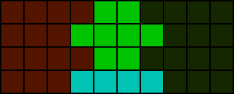
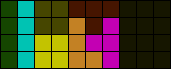
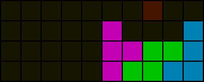
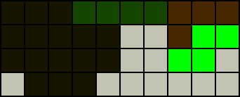
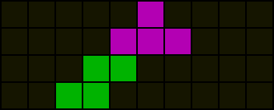
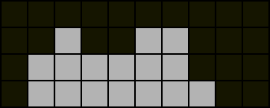

Piece dependency
Piece dependencies in the context of PC refer to how specific pieces must be placed in certain places for a PC to occur due to the arrangement of existing filled cells. It is advisable to avoid dependencies unless the required pieces are expected to be present.
Field division

The total number of empty cells in completely separate individual regions must be divisible by four for a PC to occur. If a field has separate regions that cannot be rejoined by line clearing and any of those separate regions have a total of empty cells that is indivisible by four, the field is impossible to PC in four lines.
Single piece dependencies

In the above field, the solid cells are placed pieces whereas the shaded cells indicate dependencies. T, I, and O pieces are said to be “fixed” to their respective shaded regions. Notably, while the highlighted T dependency is connected to a larger empty region to the right, any piece that overlaps both would cause the resulting regions to each have a total of empty cells indivisible by four. The logic is similar for the O dependency.

Some dependencies are discernible by parity or by enumeration of all possibilities. Observe how a T dependency is present above.
Queue-dependent piece fixing
In practice, taking into account the actual queue can help decide piece placements.

The grey cells comprise a residue following the TSD of a well-known DPC setup. The queue is *p7 and a PC is 100% possible without considering the following bag. Placing the S piece as shown would fix the L piece which would then also fix the I piece as it becomes the only piece that can fill the one high space in the 6th and 7th columns from the left.
In actuality, the I piece can be placed regardless without jeopardising PC chances.
Sidenote
A piece being fixed in a region does not imply it must occupy any single fixed cell in the region. The diagrams shown are a simplistic representation.
Exercises
- Considering only the bottom four rows, determine whether the following is true:
- Any piece that is at least three high must divide the board.
- Determine whether it is possible at all to PC the following field with any queue:

- Identify all piece dependencies in the following field:
